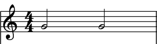
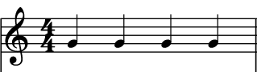
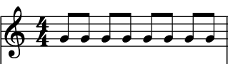

A partitura é uma representação escrita da música, que utiliza símbolos musicais para descrever notas, ritmo e outros elementos. Ela é usada para que músicos possam interpretar e executar uma composição de forma precisa. A partitura contém pautas, onde as notas são posicionadas verticalmente, e pode incluir letras, acordes e outras informações relevantes.
Duração das notas
As notas podem ter uma infinidade de tempos de duração diferentes, mas geralmente, estas são as mais comumente usadas:
Semibreve
: é a nota com a maior duração de tempo dentre as que estão aqui, sendo representada pelo valor de 1
Mínima
: tem metade da duração da semibreve, sendo representada pelo valor de 2

Semínima
: tem metade da duração da mínima, sendo representada pelo valor de 4

Colcheia
: tem metade da duração da semínima, sendo representada pelo valor de 8

Semicolcheia
: dentre as notas apresentadas, é a que tem a menor duração, sendo metade da duração da colceia, representada pelo valor de 16